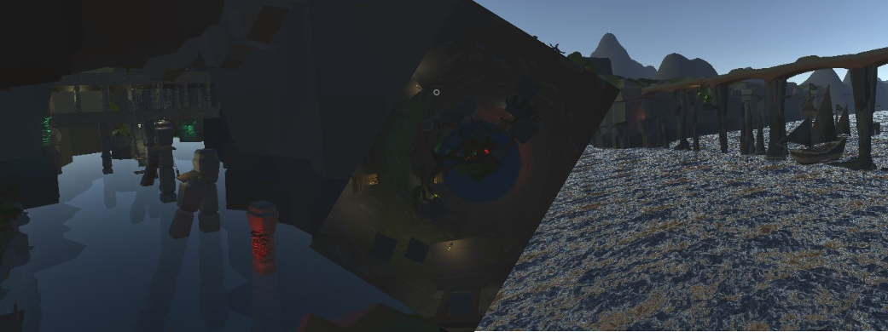

Multiplayer Jumping Game

Probably my most extensive Unity hobby project to date, most of the work took place during the summer of 2021. The idea for the game took inspiration from previous games such as
“Getting over it” and “Jump King”
but with the core change from turning it into a singleplayer to a multiplayer experience. The core concept for the gameplay was that it would be highly
challenging to the player leading to occasional high levels of frustration but also a rewarding feeling for those who managed to overcome a difficult area and progress. When creating the
game I started off by looking for a multiplayer framework that I could use and the one I opted for was a framework called Mirror.
The Mirror Unity framework already came with full support
for synchronizing the rigidbody components used for physics calculation within Unity. As such, using this framework enabled me to use networked physics for each player which was essential
for the game to work. I managed to implement this physics based networking on each player object and used it for movement and jumps.
Another feature I wanted to implement in the game was ragdolling for the player characters. Implementing this took quite a bit of time, but eventually I managed to get it to work.
The method I used was that I placed networked rigidbodies in each of the player character’s limbs which would enable it if the player entered a ragdolled state.
Along with enabling the ragdoll rigidbodies, the ragdoll state would also disable the normally active animated character. By using this ragdoll state, it was possible to easily switch between
ragdoll/non-ragdoll mode for each player which I used for example if the player encountered an obstacle while in the air.
During this project I also got some insight into level editing, as I made use of various premade low-poly style 3D models from the Unity asset store which I placed throughout the level.
Doing this took quite a bit of time and I felt fairly constricted with the models I had available, especially when it came to filling in smaller gaps and aligning models. After a while of
struggling to fill in small gaps by using basic 3D shapes, I found a tool called “UModeler Lite”
which enabled me to sculpt custom 3D shapes in the Unity engine. By using this tool, I managed to
create some of the 3D models used in the levels as well as filling in some of the gaps.
Fundamentally, the gameplay itself is very basic. The player can move around as a character and needs to get from point A to point B by jumping over chasms and cliffs without falling.
Each jump is calculated based on the duration of the player holding down their jump button (similar to Jump King) and mastering this is central to progressing as the game gets more and
more challenging, demanding more and more precision from the player. As a player progresses through the game, the idea was that they could also find various pickups which they could use
to interact with other players in the world, allowing them to either help or disrupt other people trying to progress.